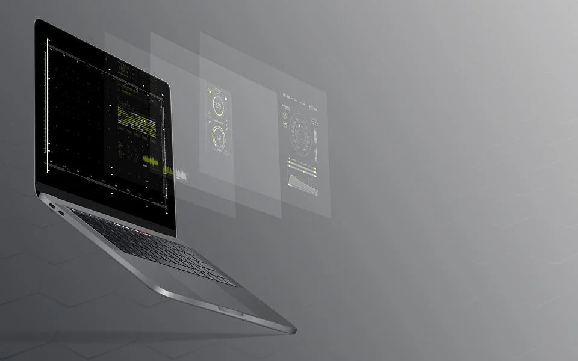

Nomura Research Institute widely
disseminates the results of its continuous
surveys of the latest IT trends to society.
Go Foward

5年後の重要技術
5年先までの間にビジネスや社会に広く普及し、様々な影響を及ぼすITとして「スーパーアプリ」「量子コンピューター」「AI2.0」等の技術トレンドについて解説した。view details -

新サービスの可能性
単一技術ではなく、複数の技術の組み合わせによって実現する「デジタルＥＳＧ」「共感技術」のソリューションサービスについて解説した。view details -
